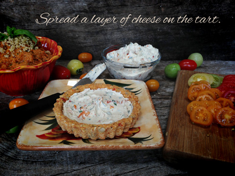
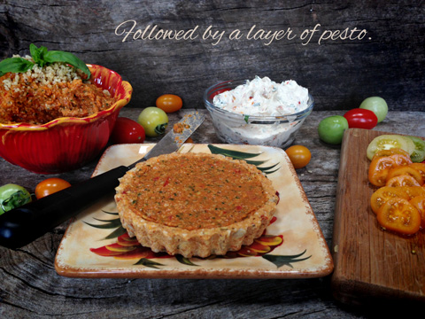
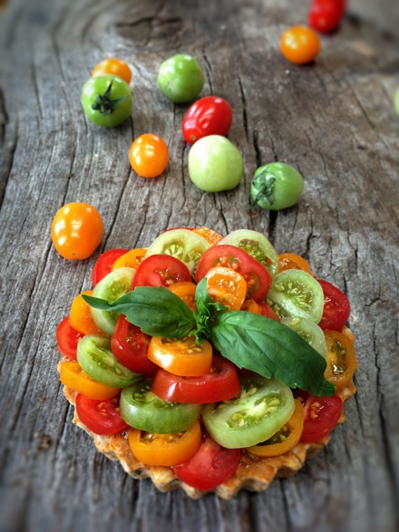

Sun-Dried Tomato and Basil Cheesy Pesto Tart
 ~ raw, vegan, gluten-free ~
~ raw, vegan, gluten-free ~
There are a lot of layers of sun-dried tomatoes and basil going on in this recipe mashup, but trust me, it works. These lil’ tarts are so easy to make. The tart crusts can be made well in advance and frozen. Pair them up with your favorite nut cheese, some fresh tomatoes, and you have something pretty special on your hands!
There are so many creative toppings that you could use, but today I am simply sharing what I made for Bob’s lunch.
But before I let you go, I must tell you that this all-too-common culinary herb is also good for you! I can’t let you enjoy this one on taste alone. :)
Through my research, I have learned that basil is known to promote a healthy gastrointestinal (GI) tract. It has anti-inflammatory properties second-to-none that can provide much-needed relief from all kinds of conditions, including inflammatory bowel disease (IBD) conditions.
Its scientific name is “Ocimum basilicum.” Shew, thank goodness that it is better known as Basil or I would be in trouble trying to remember that name. hehe
For these recipes, I used fresh organic basil instead of the dried form of the herb. Fresh leaves are always superior in quality and flavor. When purchasing from the store or picking it out of your own garden look for leaves that feature a deep green color and are free from dark spots or yellowing.
To store basil, cut 1/2 inch from the bottom of the stems and stand the sprigs upright in a glass jar. Add enough cold water to cover the stems by 1 inch. Loosely cover the leaves with a plastic bag. Store at room temperature for up to 1 week. Refrigeration can turn the leaves black.
- Sun-dried Tomato and Basil Cheese Spread
- Sun-Dried Tomato Pesto
- Sun-Dried Tomato and Basil Tart Crusts
- Extra cherry tomatoes for topping
Be aware that there are different forms of basil and each one clearly carries its own flavor note.
- Thai basil ~ Also called anise basil, this small leaf variety boasts a strong licorice flavor.
- Genovese basil ~ This type of sweet basil has a vibrant clove flavor and crinkled, curled leaves.
- Purple basil ~ Pungent and licorice-like this basil possess glossy, burgundy leaves.
- Lemon basil ~ This specialty basil has a savory lemon flavor and is characterized by its flat, narrow leaves.
- Cinnamon basil ~ With its strong cinnamon scent, this basil is easily distinguished from other varieties.
- Sweet basil ~ This is the most common variety of basil and is also known as Italian basil. The plant has bright green leaves that are smooth and do not have serrations along their edges. The leaf bases are slightly rounded, and the leaves are relatively fat with a narrow, pointed tip. This is the one that I used in all my recipes shown here.



© AmieSue.com